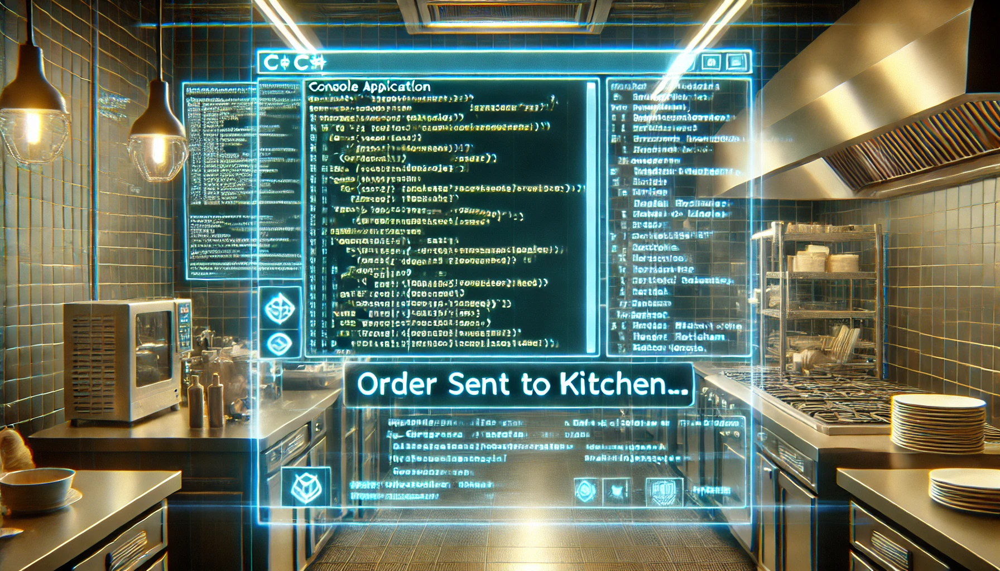

TechDeck
TechDeck – Mina Projekt & GitHub 🚀
Bank Projekt C# 💵💰
SlutProjekt-Bank är en avancerad bankapplikation byggd med C#, där användare kan skapa konton, hantera transaktioner och följa sitt saldo i realtid. 💰📊 Projektet bygger på OOP-principer och erbjuder en kraftfull men användarvänlig lösning för bankhantering. 🚀
Applikationen stödjer olika användarroller. Som admin kan man skapa konton för användare, medan en vanlig användare kan låna pengar och direkt se ränteberäkningar. Det går även att öppna ett sparkonto och följa räntan live för att planera sin ekonomi effektivt.
Perfekt för att lära sig C#-utveckling och få en djupare förståelse för hur bankapplikationer fungerar i praktiken!
OBS: Bilden är inte från det riktiga projektet!
Hotel Projekt C# 🏩
Hotel-OOP är ett hotellbokningssystem byggt med C#, där användare kan boka rum, hantera reservationer och få en översikt över tillgängliga rum. 🏨✨ Projektet är baserat på OOP-principer och erbjuder en strukturerad och effektiv lösning för hotelladministration. 🚀
Systemet stöder olika användarroller. Som admin kan man lägga till och hantera rum, medan en gäst kan boka ett rum, se tillgänglighet och avboka vid behov. Dessutom finns en dynamisk prisberäkning baserad på rummets typ och bokningslängd, vilket ger en realistisk hotellupplevelse.
Ett perfekt projekt för att förstå C#-utveckling och hur OOP kan tillämpas i verkliga system för att skapa skalbara och effektiva applikationer.
OBS: Bilden är inte från det riktiga projektet!
Digital Restaurangbeställning C# 🍽️🚀
Restaurang-beställning är ett digitalt beställningssystem byggt med C#, där kunder kan bläddra i menyn, lägga beställningar och betala direkt. 🍽️💳 Projektet är baserat på OOP-principer och erbjuder en effektiv lösning för restauranger som vill digitalisera sin beställningsprocess. 🚀
Systemet hanterar olika roller. Som admin kan man lägga till, redigera och ta bort rätter i menyn, medan en kund kan välja rätter, lägga till dem i sin beställning och få en beräknad totalkostnad i realtid. Dessutom finns en orderhistorik och möjligheten att modifiera beställningar innan betalning.
Ett utmärkt projekt för att förstå C#-utveckling och hur man bygger strukturerade beställningssystem för restauranger med en användarvänlig upplevelse.
OBS: Bilden är inte från det riktiga projektet!
Fortsättning Följer – Min Resa mot Fullstackutvecklare 🚀

Min utvecklingsresa har bara börjat, och jag har redan skapat flera spännande projekt inom olika områden. På min GitHub kan du utforska mina tidigare arbeten genom att klicka på GitHub-ikonen vid någon bild eller i footern. 📂💻
Jag har arbetat med både backend och databashantering genom SQL-kod, Entity Framework och ADO.NET. Samtidigt har jag byggt dynamiska webbapplikationer med HTML, CSS och JavaScript, vilket har gett mig en bred förståelse för fullstackutveckling. 🎨🖥️
Men detta är bara början! Jag kommer att fortsätta lära mig och utvecklas, och min resa mot att bli Fullstackutvecklare fortsätter med full fart. Beräknad färdigställning: maj 2026! 🚀📚
Följ min resa och upptäck mina projekt på GitHub!